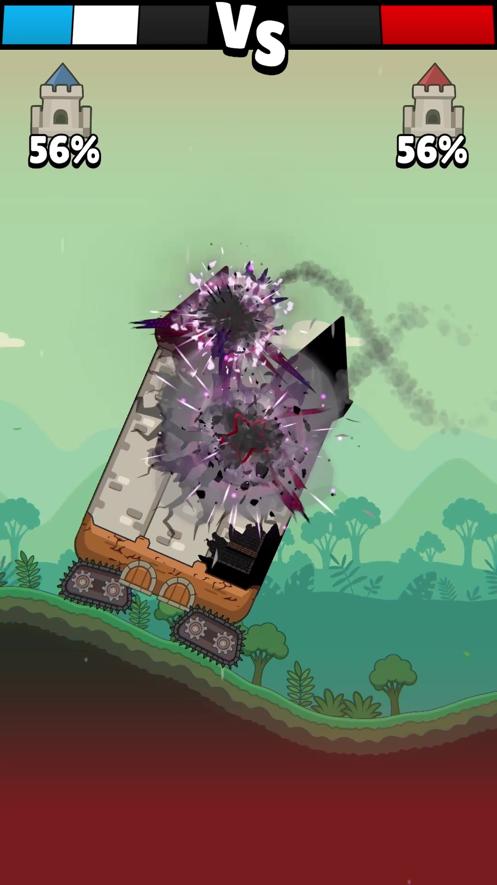
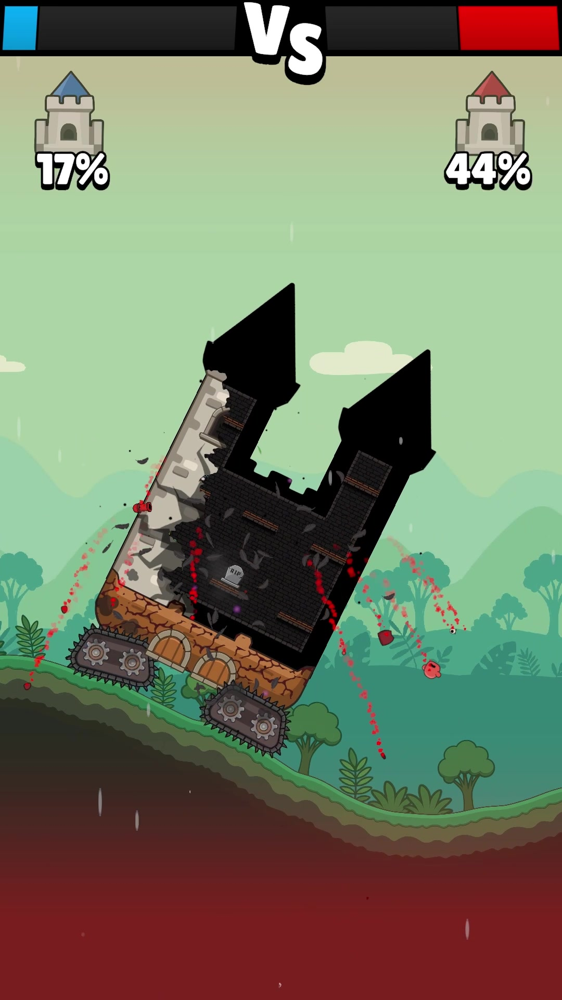
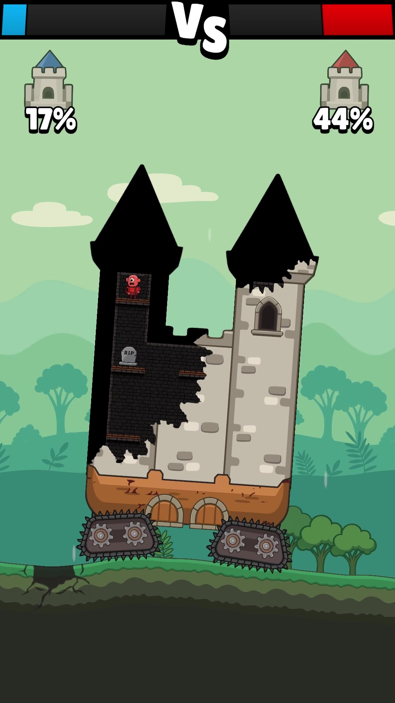

référence PRINCIPALE — frame 12s (chunk en vol)

référence — frame 40s (chaos)

référence — frame 47s (chunks tombants)

cycle de vie d'UN chunk — détaché → chute → impact (0% → 100%)
t=0% (juste détaché)
t=20% (en vol)
t=40% (mid-air, traînée)
t=70% (proche sol)
t=100% (impact sol)
scène composite — château abîmé + 3 chunks à différents stades